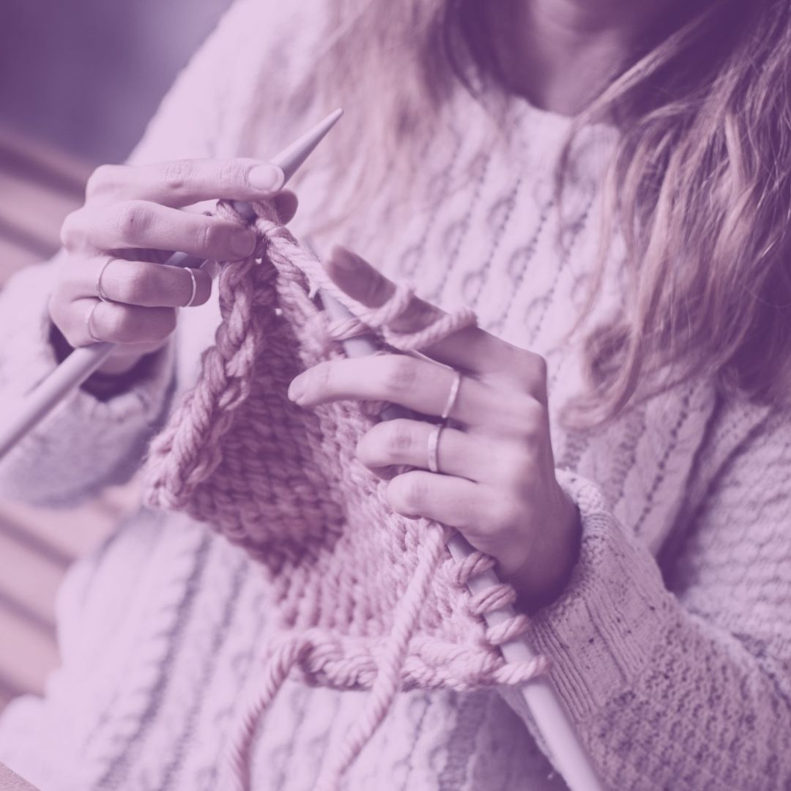

¿Quienes somos?
Somos una empresa de moda que vende ropa para bebé hecha a mano, nuestros artículos están hechos con prácticas respetuosas con el medio ambiente. Enviamos nuestras prendas directo a tu hogar para tu comodidad y pensando en tu tiempo.
Nuestro enfasis es el de prestar un servicio personalizado para que tu bebé use prendas únicas, con estilos vintage y retro que te harán pensar en las memorias que construyes con nostalgia y cariño.

¿Por qué elegirnos?
- Productos de alta calidad con materiales seguros para tu bebé y niño
- Ropa hecha a mano con mucho amor
- Compromiso con el medio ambiente
- La mejor experiencia de compra que encontrarás, ya que comenzarás tu pedido por nuestra tienda online y terminará por WhatsApp donde te confirmaremos el costo de envío correspondiente y podrás realizarnos las consultas que quieras respecto a tu compra.
- Marcas reconocidas a nivel nacional e internacionalmente.
- Tienes muchas opciones para hacer el pago: Transferencia bancaria, Billeteras virtuales, Moneda Virtual, Banca por Internet, Tarjeta de Débito y Tarjeta de Crédito. Todas la opciones están bajo la protección y seguridad de pasarelas de pago internacionales de confianza.
¿Qué encontrarás en colibrí inc?
- Comodidad y una forma de ahorrar tiempo.
En nuestra tienda para bebés y niños tendrás la oportunidad de elegir entre una variedad de productos sin tener que buscar en otros lugares, eligiendo entre todos los medios de pagos que te ofrecemos y recibiendo tu pedido hasta la puerta de tu casa.
- Productos que necesitas.
En Colibri inc nos preocupamos por ofrecer productos que sean útiles y novedosos, que ayuden a tu bebe en cada etapa de su desarrollo así como a ti también. Las marcas que ofrecemos tienen prestigio y son conocidas por su calidad. Específicamente podrás elegir entre las siguientes categorías:
- Material de calidad.
Sabemos lo importante que es para ti cuidar de tu bebé o niño, por eso te ofrecemos productos de la más alta calidad y comprometidos con el medio ambiente.
- Un trato humano.
No porque sea una tienda online significa que le compras a través de la fría Internet. Siempre tendrás nuestro apoyo en cualquier duda que tengas y presentes en nuestros otros canales como redes sociales y blog. Además que a diferencia de las comunes compras por internet, con nosotros podrás finalizar tu pedido por WhatsApp, con lo cual tendrás la seguridad de escoger y comprar lo que realmente deseas haciendo todas las consultas que necesites hacer.
Te agradecemos tu interés en conocernos un poco más, Atentamente nuestro equipo: